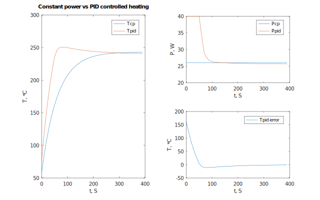

Proportional Derivative regulator class
Proportional Integral regulator class
Proportional Integral Derivative regulator class
Proportional-only regulator class
Create Proportional regulator parameters
Create Proportional Integral regulator parameters
Create Proportional Integral regulator parameters with error limit
Create Proportional Integral Derivative regulator parameters
Create Proportional Integral Derivative regulator parameters with Integral error limit
Create Proportional Derivative regulator parameters
Regulator class
Proportional regulator parameters
Proportional Integral regulator parameters with integral error limiting
Proportional Derivative regulator parameters
Proportional Integral Derivative regulator parameters with integral error limiting
The state of regulator
Couple Proportional term
Limit Integral error
Check for regulator class
Check for regulator params
PID controller wikipedia article.
PID controller
Proportional Integral Derivative (PID) regulator.
The Proportional (P), Proportional Integral (PI) and Proportional Derivative (PD) variants are also supported.
